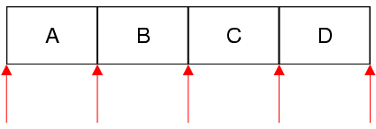

QMutableSetIterator Class
template <typename T> class QMutableSetIteratorThe QMutableSetIterator class provides a Java-style non-const iterator for QSet. More...
| Header: | #include <QMutableSetIterator> |
| CMake: | find_package(Qt6 COMPONENTS Core REQUIRED) target_link_libraries(mytarget PRIVATE Qt6::Core) |
| qmake: | QT += core |
Public Functions
| QMutableSetIterator(QSet<T> &set) | |
| QMutableSetIterator<T> & | operator=(QSet<T> &container) |
| bool | findNext(const T &value) |
| bool | hasNext() const |
| const T & | next() |
| const T & | peekNext() const |
| void | remove() |
| void | toBack() |
| void | toFront() |
| const T & | value() const |
Detailed Description
QSet has both Java-style iterators and STL-style iterators. STL-style iterators are more efficient and should be preferred.
QMutableSetIterator<T> allows you to iterate over a QSet<T> and remove items from the set as you iterate. If you don't want to modify the set (or have a const QSet), use the slightly faster QSetIterator<T> instead.
The QMutableSetIterator constructor takes a QSet as argument. After construction, the iterator is located at the very beginning of the set (before the first item). Here's how to iterate over all the elements sequentially:
QSet<float> set; ... QMutableSetIterator<float> i(set); while (i.hasNext()) qDebug() << i.next();
The next() function returns the next item in the set and advances the iterator. Unlike STL-style iterators, Java-style iterators point between items rather than directly at items. The first call to next() advances the iterator to the position between the first and second item, and returns the first item; the second call to next() advances the iterator to the position between the second and third item, returning the second item; and so on.

If you want to remove items as you iterate over the set, use remove().
Only one mutable iterator can be active on a given set at any time. Furthermore, no changes should be done directly to the set while the iterator is active (as opposed to through the iterator), since this could invalidate the iterator and lead to undefined behavior.
See also QSetIterator and QSet::iterator.
Member Function Documentation
void QMutableSetIterator::toFront()
Moves the iterator to the front of the container (before the first item).
QMutableSetIterator<T> &QMutableSetIterator::operator=(QSet<T> &container)
Makes the iterator operate on set. The iterator is set to be at the front of the set (before the first item).
See also toFront() and toBack().
QMutableSetIterator::QMutableSetIterator(QSet<T> &set)
Constructs an iterator for traversing set. The iterator is set to be at the front of the set (before the first item).
See also operator=().
bool QMutableSetIterator::findNext(const T &value)
Searches for value starting from the current iterator position forward. Returns true if value is found; otherwise returns false.
After the call, if value was found, the iterator is positioned just after the matching item; otherwise, the iterator is positioned at the back of the container.
bool QMutableSetIterator::hasNext() const
Returns true if there is at least one item ahead of the iterator, i.e. the iterator is not at the back of the container; otherwise returns false.
See also next().
const T &QMutableSetIterator::next()
Returns the next item and advances the iterator by one position.
Calling this function on an iterator located at the back of the container leads to undefined results.
See also hasNext() and peekNext().
const T &QMutableSetIterator::peekNext() const
Returns the next item without moving the iterator.
Calling this function on an iterator located at the back of the container leads to undefined results.
See also hasNext() and next().
void QMutableSetIterator::remove()
Removes the last item that was jumped over using one of the traversal functions (next(), findNext()).
Example:
QMutableSetIterator<int> i(set); while (i.hasNext()) { int val = i.next(); if (val < -32768 || val > 32767) i.remove(); }
See also value().
void QMutableSetIterator::toBack()
Moves the iterator to the back of the container (after the last item).
See also toFront().
const T &QMutableSetIterator::value() const
Returns the value of the last item that was jumped over using next() or findNext().